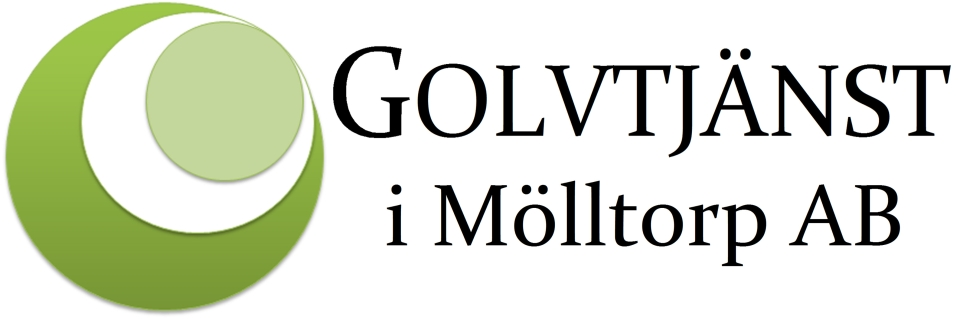
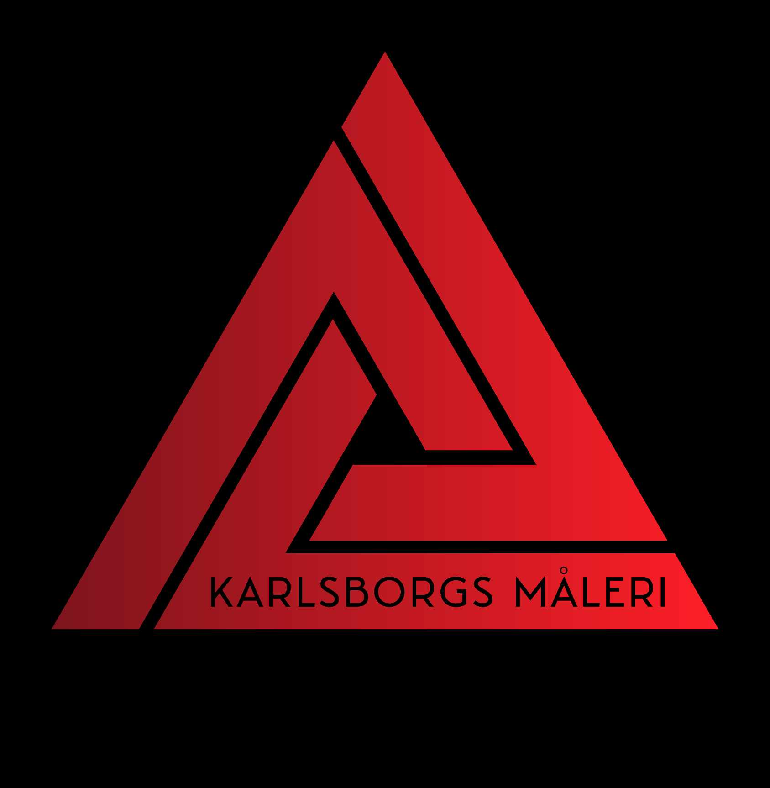
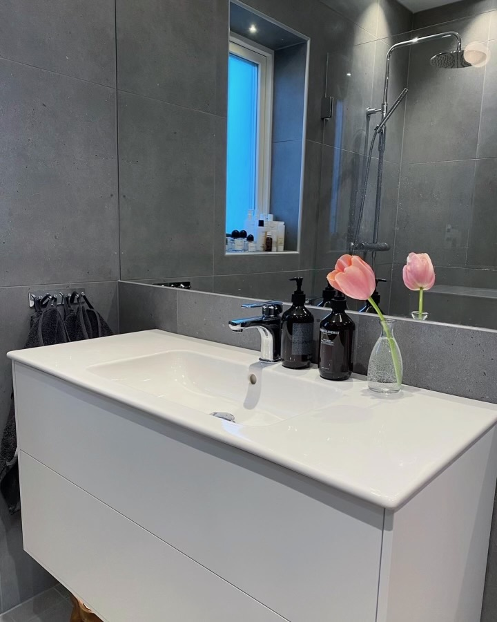
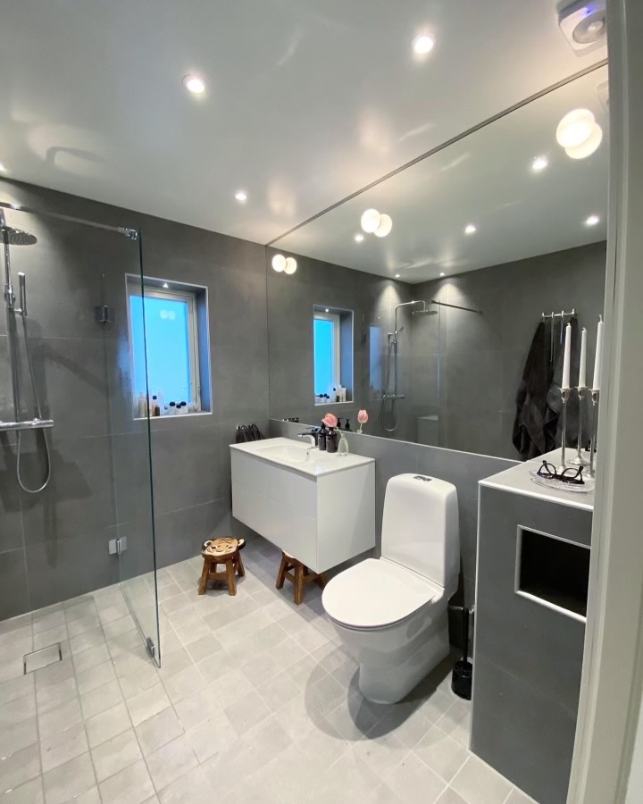
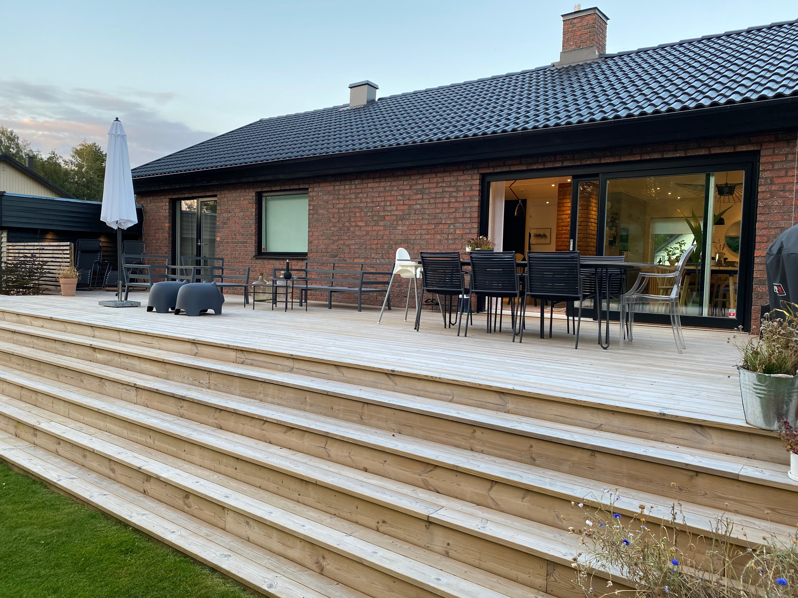
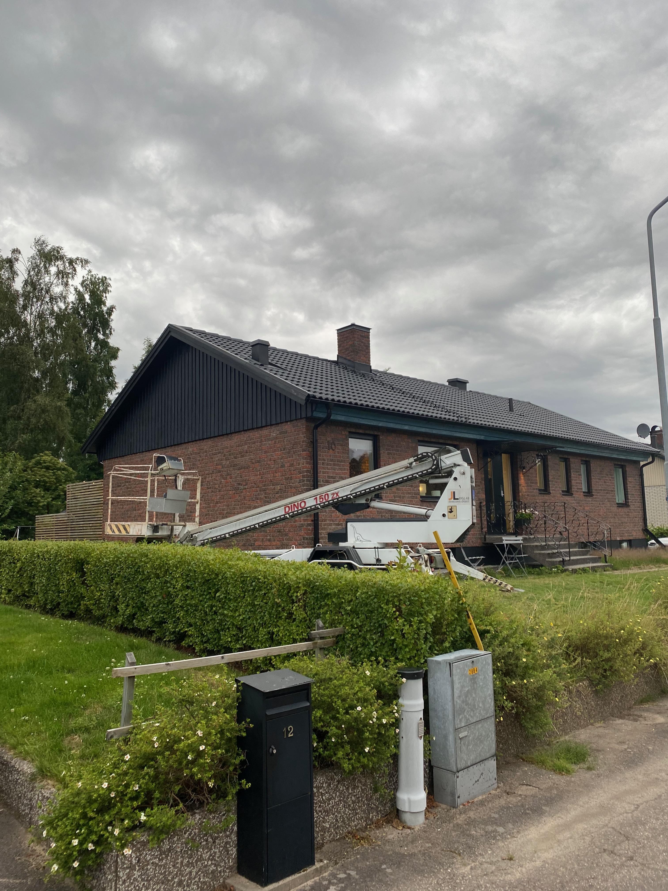

Din byggfirma
i Karlsborg
Vi utför allt inom bygg och snickerier med största kvalitet. Med lång erfarenhet och med kunden i fokus hjälper vi dig med de projekt du behöver hjälp med — renovering, nybyggnation, takläggning, badrum, kök, altan m.m. Vi projektleder och samarbetar med erfarna elektriker, målare, rörmokare och plattsättare.
KontaktVåra samarbetspartners  
Om oss
JL bygg är en liten snickarfirma i Karlsborg som ägs och drivs av Claes Löfquist och David Johansson. Vår passion är att skapa kvalitativa snickerilösningar som uppfyller dina behov och önskemål.
Vi tror på ärlighet, noggrannhet och att lyssna på våra kunder. Oavsett om det handlar om små reparationer eller större byggprojekt så strävar vi alltid efter att överträffa dina förväntningar.
Vi är stolta över att vara en del av Karlsborgs gemenskap och ser fram emot att vara din partner för alla dina byggbehov.
Bilder
   Uthyrning
Vi erbjuder uthyrning av både små och stora maskiner. Bl a skylift, mindre lastare och diverse handverktyg. Hör av dig till oss så hjälper vi dig med just det du behöver.
Kontakt
Claes Löfquist
Claes@jlbyggab.se
0708252573
Claes Löfquist
Claes@jlbyggab.se
0708252573